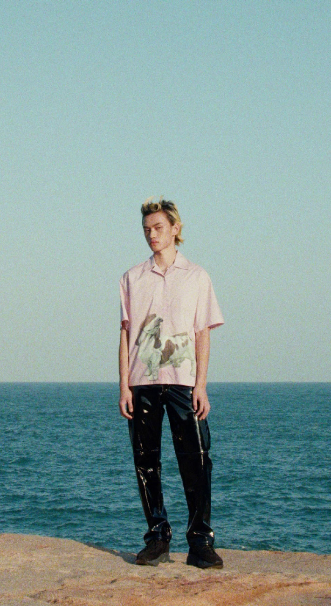

I.T is an international multi-brand fashion retailer primarily focusing on Hong Kong & China with over 800 stores and a further presence in London, New York, Tokyo and more.
I joined I.T in 2018 as Creative Director of their newly launched e-commerce team ITeSHOP to oversee all visual aspects of their digital persona from UI/UX, photography, branding, advertising, graphic design and web development.
In 2021 I chose to specialise in web design as Head of UI/UX to help further our focus on product design on web, app, WeChat Mini program, and instore kiosk across multiple in-house brands and international regions.
I joined I.T in 2018 as Creative Director of their newly launched e-commerce team ITeSHOP to oversee all visual aspects of their digital persona from UI/UX, photography, branding, advertising, graphic design and web development.
In 2021 I chose to specialise in web design as Head of UI/UX to help further our focus on product design on web, app, WeChat Mini program, and instore kiosk across multiple in-house brands and international regions.
Mini Program
In 2020 we introduced our e-commerce WeChat Mini Program allowing our China digital market to grow rapidly on the emerging prefered shopping platform. The Mini Program used many of the UX patterns of our website for consistency but allowed us to concentrate on the Chinese markets' needs and expectations where needed to create a more unique shopping experience through market research and understanding of WeChat’s platform and best practices.

The I.T Family
I.T is a unique multi-brand retailer in that it features two-parent brands in I.T and i.t as well as creating and managing multiple in-house brands.
The main brands are I.T - which hosts luxury designers such as COMME des GARÇONS, Off-White, Acne Studios, A.P.C., Balenciaga etc, - and i.t - hosting more lower-priced, youthful designers such as AAPE, :CHOCOOLATE, Carhartt, Fred Perry, izzue etc.
This unique approach lends itself to a two shop system for ITeSHOP that shares the same backend account and checkout between both brands under one website. Each shop provides its respective unique branding while sharing consistent functionality. Creating a consistent design system was key due to having two shops within one website that was also replicated across over 6 international regions with separate sites, platforms and vernaculars.
The main brands are I.T - which hosts luxury designers such as COMME des GARÇONS, Off-White, Acne Studios, A.P.C., Balenciaga etc, - and i.t - hosting more lower-priced, youthful designers such as AAPE, :CHOCOOLATE, Carhartt, Fred Perry, izzue etc.
This unique approach lends itself to a two shop system for ITeSHOP that shares the same backend account and checkout between both brands under one website. Each shop provides its respective unique branding while sharing consistent functionality. Creating a consistent design system was key due to having two shops within one website that was also replicated across over 6 international regions with separate sites, platforms and vernaculars.
I.T consists of a family of in-house brands and our team were responsible for updating the Bape e-commerce site for existing and new regions as well as developing digital identities for AAPE, Bape Black, Bapy, izzue and :CHOCOOLATE. This included the design and deployment of the e-commerce sites and the creation and management of digital assets for product launches, EDMs, and advertising.
The goal of all brands within the I.T family was to create a platform that is scalable and can fit a diverse range of content efficiently while maintaining the different brands evolving design language. While challenging it was important to keep processes simplified and streamlined across over 6 brands, 6 regions and countless stakeholders to ensure smooth and expected outcomes.
The goal of all brands within the I.T family was to create a platform that is scalable and can fit a diverse range of content efficiently while maintaining the different brands evolving design language. While challenging it was important to keep processes simplified and streamlined across over 6 brands, 6 regions and countless stakeholders to ensure smooth and expected outcomes.
Brand Campaign
“Discover Your Edge” brand campaign executed in 2021. Our team was responsible for the concept, messaging, visual direction and execution, and all formats and touchpoints. The campaign received over 600k YouTube views and over 1m impressions.
I.T Post
Although our team was primarily assigned with the ITeSHOP platform, we worked frequently in collaboration with offline and corporate teams to assist with their creative and digital needs. One example of this was the digitalisation of I.T’s revered quarterly magazine I.T Post.
I.T30
Creative Director
2018 — 2019
2018 — 2019
Shortly upon my arrival I.T was looking to celebrate its 30th anniversary with a campaign that celebrated the past and looked to the future of the retailer. I was assigned to lead the creative concept of the project that would look to feature both online and offline visibility.
We decided to collaborate with the Dutch digital fashion house The Fabricant to digitally reproduce our anniversary collection and visual campaign that shared our beliefs in the future of digital fashion.
Although created in 2018, this campaign looked to set a precedent digitally with I.T’s belief in pushing forward new experiences within fashion and The Fabricant’s belief in envisioning a future where fashion transcends the physical body, in which today they are the leaders in their Web3.0 field.
We decided to collaborate with the Dutch digital fashion house The Fabricant to digitally reproduce our anniversary collection and visual campaign that shared our beliefs in the future of digital fashion.
Although created in 2018, this campaign looked to set a precedent digitally with I.T’s belief in pushing forward new experiences within fashion and The Fabricant’s belief in envisioning a future where fashion transcends the physical body, in which today they are the leaders in their Web3.0 field.
Along with the visual campaign, we exhibited our vision and exclusive anniversary collection around the world in Hong Kong, Shanghai, Beijing and Paris. The popups featured architectural design by Jamie Fobert and interaction design by Your Majesty to create a unique experience that paired the digital and physical world of fashion together. Viewers were able to see the physical pieces alongside their digital counterparts and make purchases directly on their phones or at the digital kiosks placed throughout.
Fashion 3D Design by The Fabricant ↗
Installation Interactive Design by Your Majesty ↗
Fashion 3D Design by The Fabricant ↗
Installation Interactive Design by Your Majesty ↗